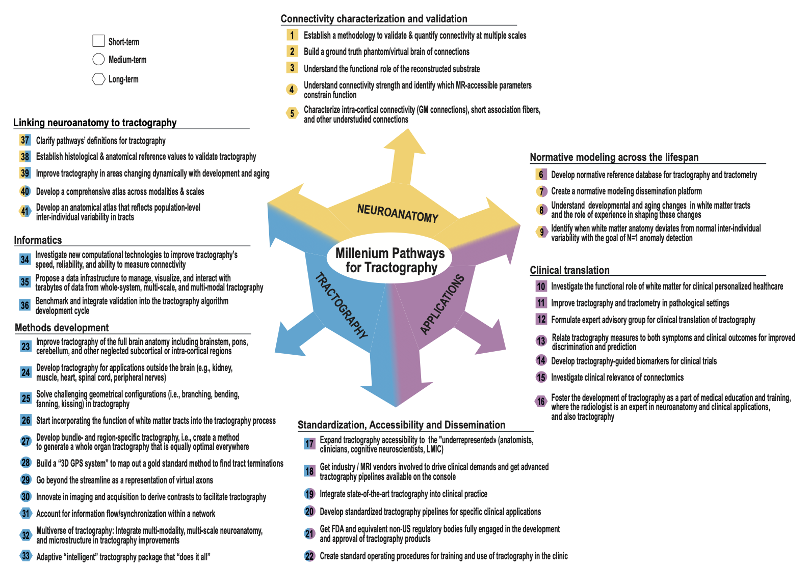

FOUNDATIONS
What exactly are we reconstructing?Ground truth · anatomy · validation · multiscale atlases
Tractography has transformed how we map and study structural brain connectivity. Its next step is not simply better algorithms or higher-resolution data: it is the emergence of a mature scientific discipline, with shared questions, common standards and a collective vision of the road ahead.
Drawing inspiration from Hilbert’s 23 mathematical problems, a list that focused a scientific community’s attention for more than a century, the tractography community defined 40 grand challenges. Organized into five interconnected pillars, they form a shared roadmap for turning tractography into a biologically grounded, quantitatively robust and clinically impactful science of connectivity.
The International Society for Tractography (IST) connects experts across disciplines to advance tractography through education, scientific exchange and large-scale collaboration. This community-building ambition provided the setting for the inaugural Tractography & Neuroanatomy Retreat in Corsica in 2024, where 55 international experts worked through roundtables and collaborative brainstorming rather than a conventional conference format.
To define a roadmap for the field, the International Society for Tractography launched the Millennium Pathways initiative, which generated 40 community-driven grand challenges during the inaugural Tractography and Neuroanatomy Retreat in March 2024. These challenges are organized into five interconnected pillars - Foundations, Measurements, Dynamics, Impact, and Ecosystem - that describe the maturation of tractography as a scientific discipline.
Pillar 1 establishes biological ground truth and validation across spatial and biological scales.
Pillar 2 advances next-generation methods for reconstructing pathways and estimating biologically meaningful properties of structural connectivity.
Pillar 3 addresses how tractography-derived connectivity evolves across development, aging, plasticity, and disease.
Pillar 4 determines the biological and functional meaning of tractography-derived measurements and links them to cognition, clinical outcomes, and precision medicine.
Pillar 5 covers the standards, data resources, software, training, access, industry partnerships, and regulatory work needed to support the other four pillars.
Together, these five pillars provide a conceptual framework for transforming tractography into a biologically grounded, methodologically robust, quantitatively interpretable, and clinically actionable discipline.
Pour définir une feuille de route pour le domaine, l’International Society for Tractography a lancé l’initiative Millennium Pathways, qui a généré 40 grands défis issus de la communauté lors du premier Tractography and Neuroanatomy Retreat en mars 2024. Ces défis sont organisés en cinq piliers interconnectés — Foundations, Measurements, Dynamics, Impact et Ecosystem — qui décrivent la maturation de la tractographie en tant que discipline scientifique.
Pilier 1 établit les bases de vérité biologique et la validation à travers les échelles spatiales et biologiques.
Pilier 2 fait progresser les méthodes de nouvelle génération pour reconstruire les voies et estimer des propriétés biologiquement significatives de la connectivité structurelle.
Pilier 3 examine comment la connectivité dérivée de la tractographie évolue au cours du développement, du vieillissement, de la plasticité et de la maladie.
Pilier 4 détermine la signification biologique et fonctionnelle des mesures dérivées de la tractographie et les relie à la cognition, aux résultats cliniques et à la médecine de précision.
Pilier 5 couvre les standards, les ressources de données, les logiciels, la formation, l’accès, les partenariats industriels et les travaux réglementaires nécessaires pour soutenir les quatre autres piliers.
Ensemble, ces cinq piliers fournissent un cadre conceptuel pour transformer la tractographie en une discipline biologiquement fondée, méthodologiquement robuste, quantitativement interprétable et cliniquement exploitable.
The 40 Millennium Pathways emerged directly from the inaugural Tract-Anat Retreat. The retreat brought together 55 experts from Europe, North America, South America, Asia and Australia around three thematic tracks — neuroanatomy and validation, tractography algorithms and modelling, and clinical applications and translation. Their collective discussions generated short-, medium- and long-term challenges across seven categories and three overarching themes.
A comprehensive agenda spanning foundations, methods, lifespan dynamics, clinical impact and the ecosystem.
Each challenge is annotated S, M or L to express the scale of effort and collaboration required.
The web index gives direct access to the full Supplementary Materials text for every challenge.
A collective agenda designed to focus effort, foster collaboration and evolve with the field.

Click on each challenge title to access its full description. Challenges are numbered from 1 to 40 and annotated with ‘S’ for short-term, ‘M’ for mid-term, ‘L’ for long-term challenges.